Префектура Яманаси · деревня Косугэ · пиво и кемпинг
Far Yeast Brewing в деревне Косугэ: крафтовое пиво у истоков Тамагавы и ночь в доме эпохи Дзёмон
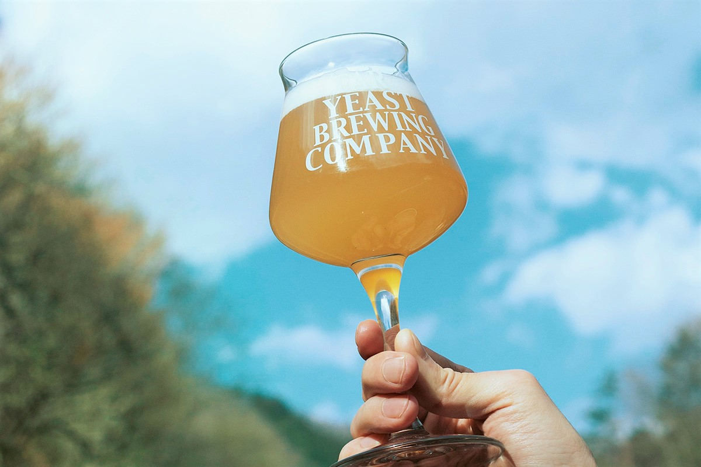
Пивоварня Far Yeast Brewing много лет знакомит мир с японским крафтовым пивом. В 2020 году она перенесла главный офис из Токио в горную деревню Косугэ, а весной 2021 года её пиво стали наливать в деревенском кемпинге, где ночуют в хижинах на манер древних жилищ.
Деревня
Косугэ у истоков Тамагавы
Деревня Косугэ лежит в префектуре Яманаси, в верховьях реки Тамагава, той самой, что течёт через Токио. Леса занимают 95% её земли, в горах живут олени, кабаны и множество птиц. От центра Токио сюда около двух часов на машине, поэтому в деревню охотно приезжают с палатками и на мотоциклах. В 2019 году здесь открылась гостиница в старых домах NIPPONIA Kosuge, и о маленькой деревне, где в 2021 году жили около 700 человек, заговорили.
По-настоящему известной на всю страну Косугэ сделала осень 2020 года. Тогда Far Yeast Brewing, крафтовая пивоварня с международной известностью, перевезла сюда главный офис из токийского района Сибуя. Собственный завод, пивоварня «Гэнрю» («исток»), работал в деревне с 2017 года, и компания просто соединила офис с производством.
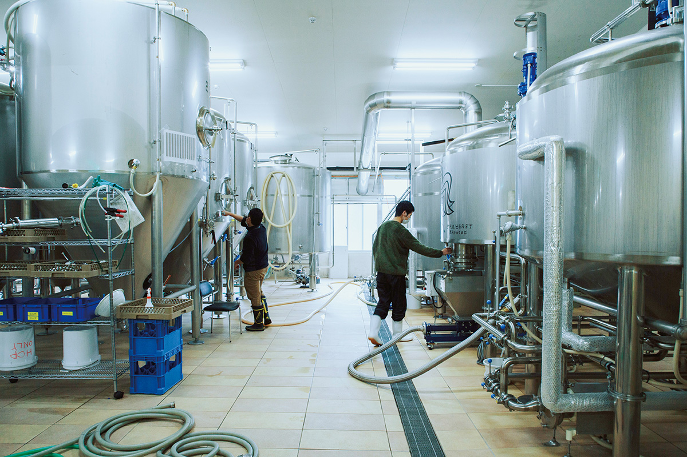
О причинах переезда рассказывает основатель компании Сиро Ямада.
«Из-за пандемии коронавируса мы перешли на удалённую работу, и сотрудники стали работать не хуже, а даже эффективнее. Для пивоварни самое важное это завод. Держать главный офис при нём естественно, так что в решении о переезде я не сомневался»
Сиро Ямада, основатель Far Yeast Brewing
История
«Демократизировать пиво»
Компания появилась в 2011 году под другим названием, «Нихон крафт бир». Сиро Ямада до этого работал в венчурных фондах и IT-компаниях, получил степень MBA в Кембриджском университете и, пока жил в Европе, увлёкся историей, культурой и разнообразием пива. Отсюда и выросла пивоварня.
«Наша миссия называется Democratizing Beer. Промышленность превратила пиво в одинаковый массовый товар, а мы хотим вернуть ему разнообразие и богатство. В 2011 году японский крафт уже вели вперёд пивоварни, которые варили очень качественное пиво. Повторять за ними значило мало что дать отрасли. Поэтому мы решили сделать пиво с другим подходом, и так появилось KAGUA»
Сиро Ямада
KAGUA варят с японскими юдзу и сансё, японским перцем. У него яркий цветочный вкус и высокая крепость, и задумано оно как пиво к еде. В 2014 году, чтобы ещё громче говорить о разнообразии пива, компания выпустила вторую марку, Far Yeast, посвящённую Токио. Её делали лёгкой для питья, с тонким букетом ароматических сортов хмеля.
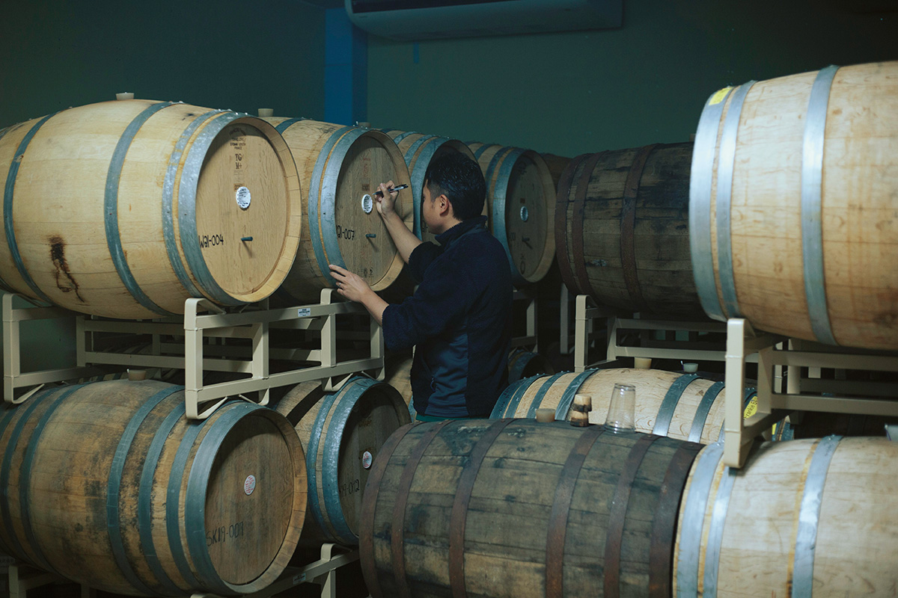
Начинала Far Yeast Brewing как «фантомная пивоварня» без собственного завода: пиво для неё варили другие. Свой завод в Косугэ она открыла только в 2017 году, хорошо подготовившись.
Вода
Токийское пиво из истока Тамагавы
«В Косугэ холодно, и здесь много чистой воды. В тёплом климате легко размножаются вредные для пива бактерии, а воды при варке уходит очень много, так что оба этих условия для нас большой плюс. К тому же Косугэ стоит у истоков Тамагавы. Серия Far Yeast выходит под названиями Tokyo Blonde, Tokyo White, Tokyo IPA, и история о том, что пиво варят у источника воды для Токио, к ним прекрасно подходит. Пиво то же самое, но в префектуре Яманаси мы продаём его под словом „Гэнрю“, „исток“, вместо „Токио“»
Сиро Ямада
После переезда компания всерьёз взялась за дела деревни и префектуры. Одно из них это «Проект поддержки Яманаси»: серия Made in Yamanashi, пиво из фруктов и овощей, выращенных в префектуре.
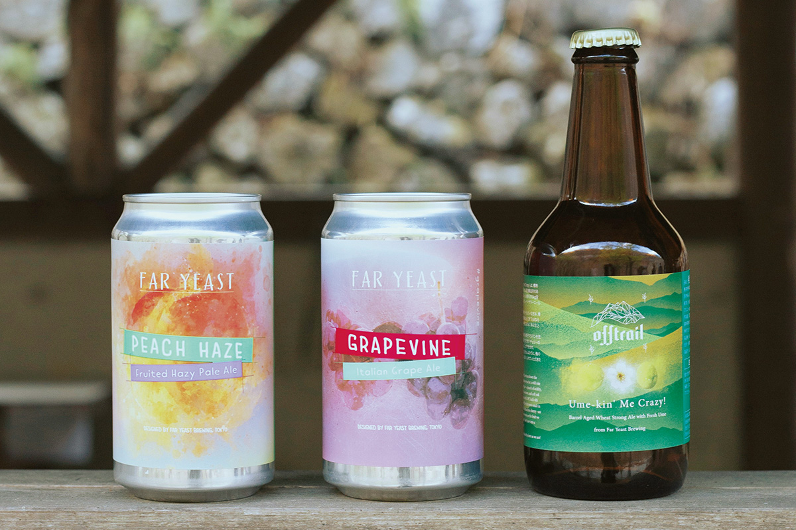
«Хочется крепче связываться с местными жителями, создавать рабочие места и звать людей переезжать сюда. Думать о том, как оживить регион, меньше нагружать природу и решать общественные задачи, и действительно делать это: вот что я считаю ответственностью компании в наше время»
Сиро Ямада
Кемпинг
«Гэнсимура»: ночь в жилище эпохи Дзёмон
С весны 2021 года пиво Far Yeast Brewing можно пить в кемпинге «Гэнсимура», «первобытная деревня», который в апреле того же года открылся после обновления. Здесь ночуют в хижинах, построенных на манер жилищ доисторической эпохи Дзёмон: полуземлянок под конической крышей и пещерных жилищ. У реки есть площадки для палаток, а можно приехать только ради барбекю. Место подходит и опытным походникам, и тем, кто впервые выбрался на природу.
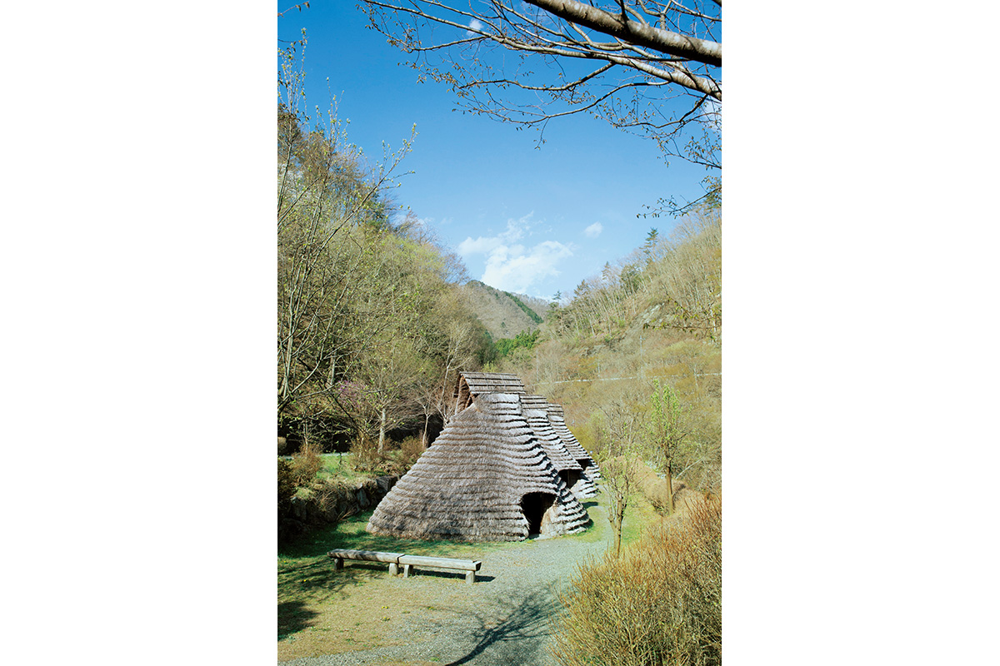
Полуземлянка это главный символ кемпинга. Снаружи у неё соломенная крыша, а внутри настелен деревянный пол, и в хижине вполне уютно.
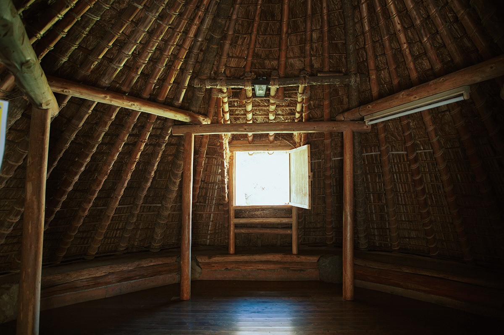
Сиро Ямада советует пить пиво именно на природе, тем более в сезон походов.
«Far Yeast у нас получается чистым и бодрящим, на улице оно особенно хорошо. Отдыхайте на природе и заодно почувствуйте, какое разное бывает пиво»
Сиро Ямада
В десяти минутах на машине от кемпинга работает онсэн «Косугэ-но ю» в верховьях Тамагавы, куда приезжают на день. Пиво после горячей воды, когда смоешь дорожную пыль, кажется ещё вкуснее.
«Мукка»: дичь и овощи деревни
В мае 2021 года в кемпинге открылась столовая «Мукка», где готовят дичь из Косугэ. Здесь наливают пиво серии Far Yeast и ограниченные выпуски, а со временем собирались продавать и бутылки с банками Far Yeast Brewing.
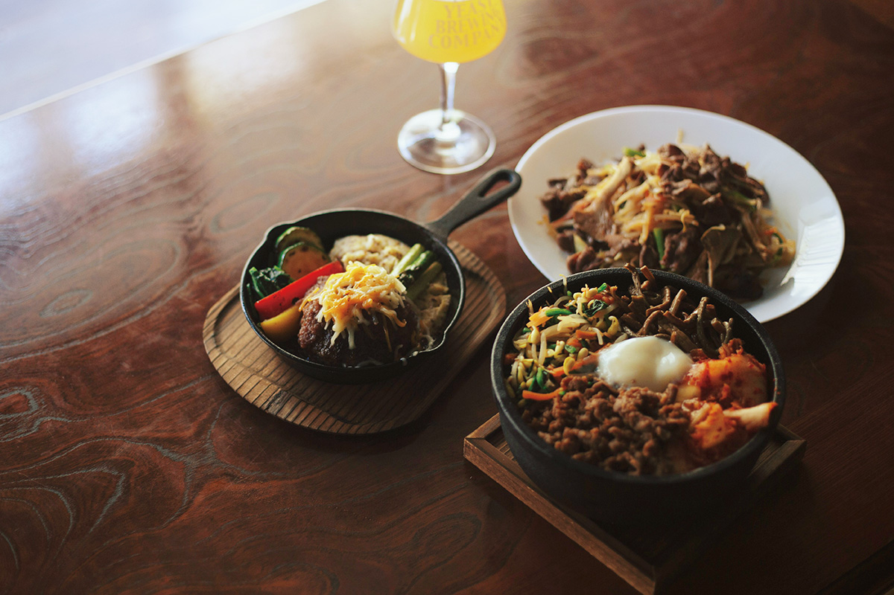
Кемпинг «Гэнсимура»
- Адрес
- префектура Яманаси, уезд Китацуру, деревня Косугэ, 1970
- Телефон
- +81 80-9297-6609
- Цены / Вход
- хижина-полуземлянка 12 000 иен (до 6 человек), плюс сбор за пользование кемпингом 500 иен со взрослого и 300 иен с ребёнка; в будни вне высокого сезона (в 2021 году с 26 апреля по 9 мая и с 1 июля по 31 августа) скидка 3000 иен за ночь. Есть также хижины-пещеры и площадки для палаток
- Заезд / выезд
- 14:00 / 10:00
- Как добраться
- от станции JR Окутама автобусом около 50 минут до остановки «Косугэ-но ю»; на машине от станции Окутама по дорогам 411 и 139 около 30 минут
Столовая «Мукка»
- Адрес
- префектура Яманаси, уезд Китацуру, деревня Косугэ, 1970 (на территории кемпинга «Гэнсимура»)
- Телефон
- +81 80-9297-6609
- Часы работы
- 11:00–15:00 (только обед)
- Выходные
- вторник, четверг
Пиво
Что пить: серия «Гэнрю» только для Яманаси
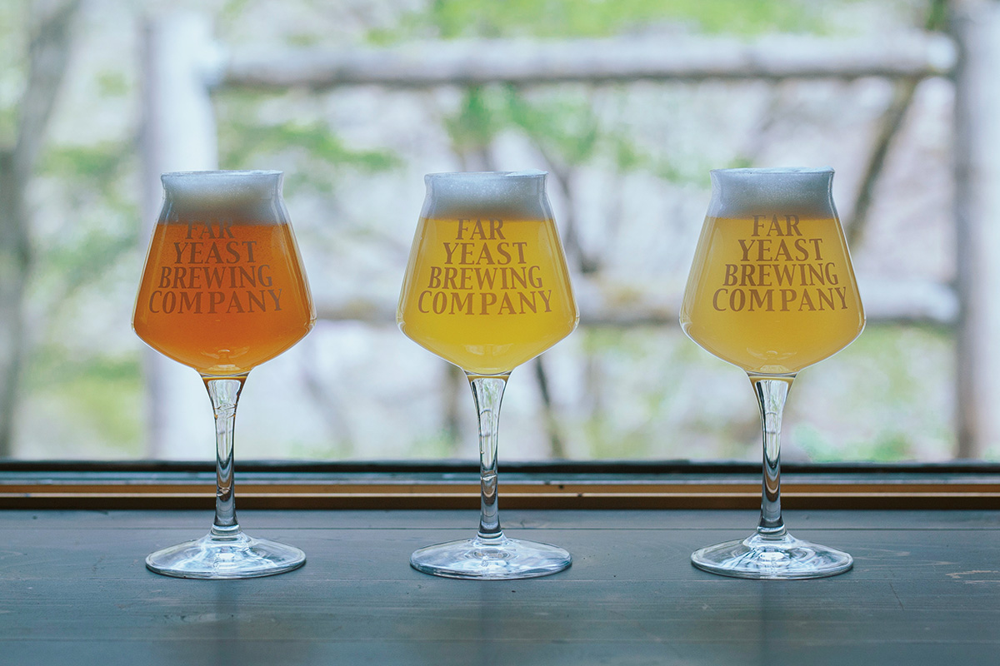
В префектуре Яманаси пиво Far Yeast продают под словом «Гэнрю». На этикетках по-английски оно названо The Headwaters, «верховья». В 2021 году бутылка 250 мл любого из трёх сортов стоила 600 иен.
«Гэнрю Уайт»: фруктовый аромат и острый финиш
Это пиво в стиле сезон, сухое и резкое во вкусе. В нём свежий аромат хмеля, фруктовые эфирные ноты и приятная кислинка. На конкурсе International Beer Cup «белое» Far Yeast четыре раза получало золото, и наград у него много.
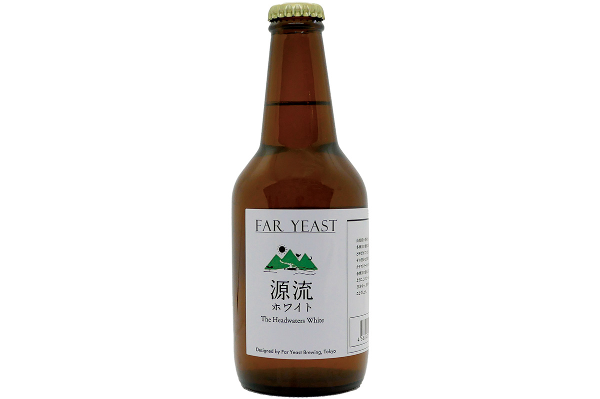
«Гэнрю Блонд»: лёгкий золотой эль
Ароматического хмеля здесь не жалеют, и сладость и горечь, которые он даёт, точно уравновешены. Тело средне-лёгкое, пьётся легко. Пивоварня дорожит тем, за что ценят «живое» пиво.
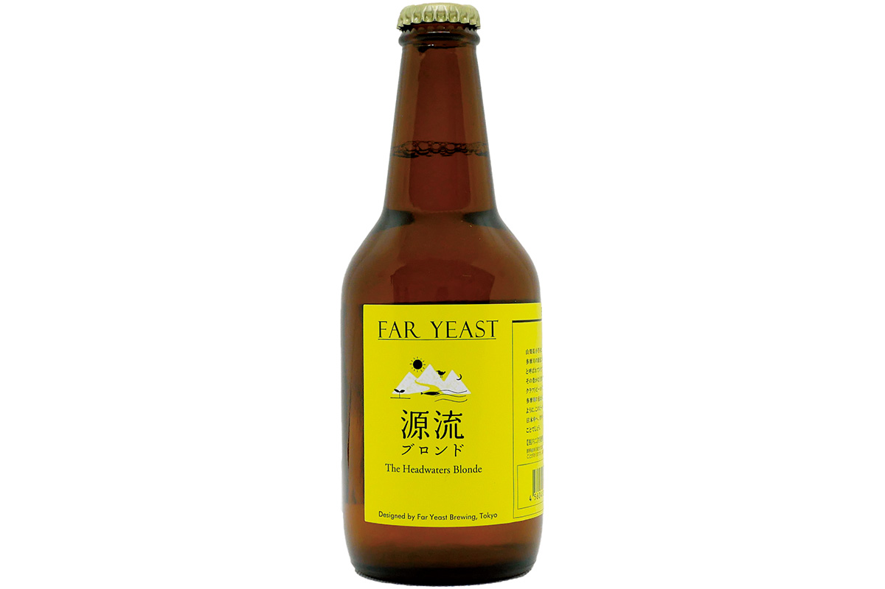
«Гэнрю IPA»: бельгийские дрожжи и американский хмель
У этого пива в меру плотное, среднее тело. Бельгийские дрожжи вместе с американским хмелем дают цитрусовый аромат и горчинку, а сквозь них едва слышен вкус обжаренного солода.
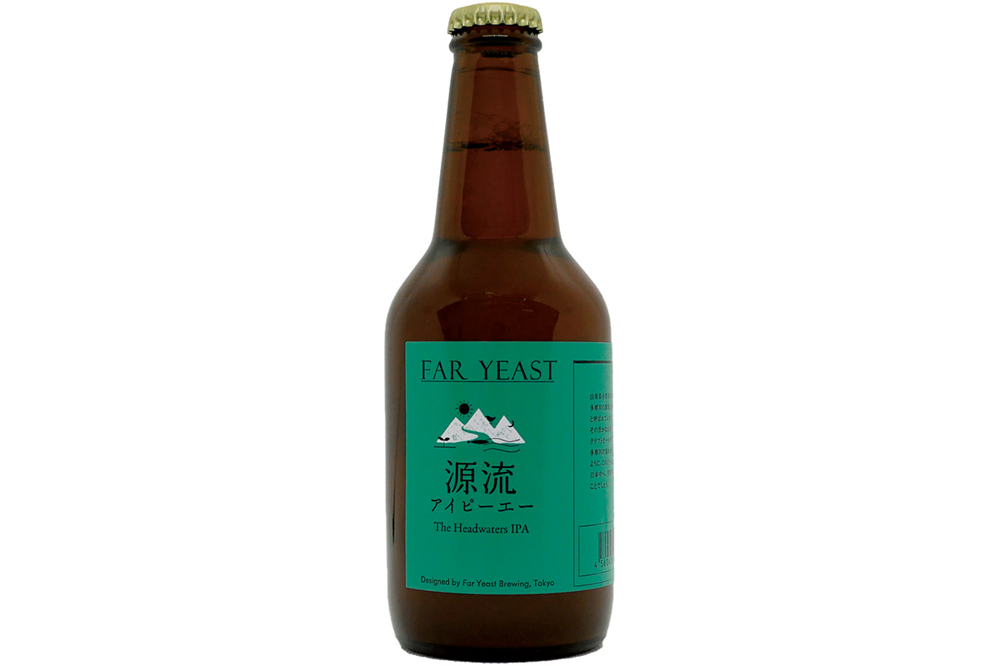
Пиво Far Yeast Brewing продаёт и придорожная станция «Косугэ» в той же деревне. Рядом с ней работает THE FAR YEAST Beer Adventure (ресторан частично открылся в ноябре 2025 года, полностью в марте 2026 года), ресторан с кранами самообслуживания, где пиво пивоварни можно попробовать на месте.
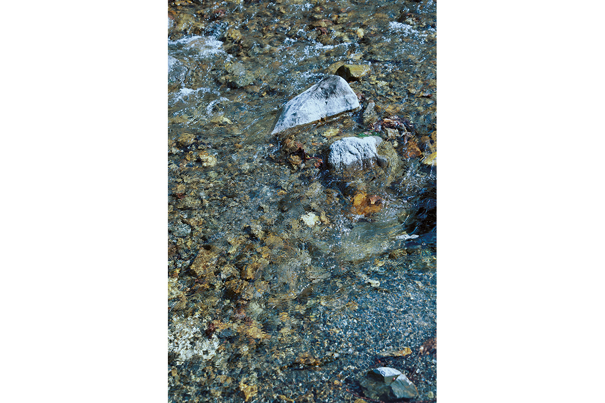
Придорожная станция «Косугэ»
- Адрес
- префектура Яманаси, уезд Китацуру, деревня Косугэ
- Телефон
- +81 428-87-0765
THE FAR YEAST Beer Adventure
- Адрес
- префектура Яманаси, уезд Китацуру, деревня Косугэ, 3462
- Сайт
- faryeast.com
Фото: Мая Мацуура.